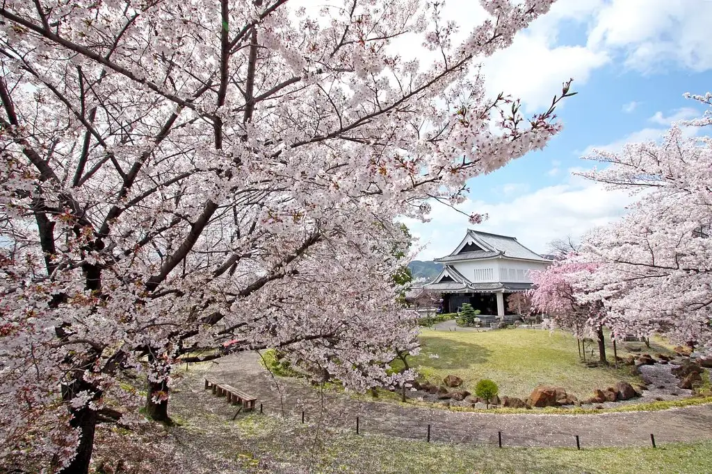
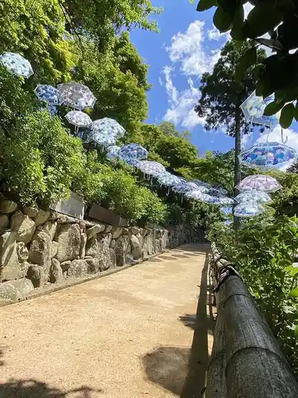
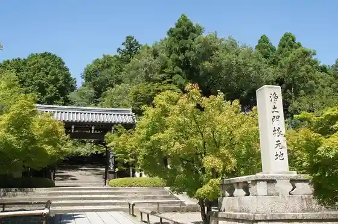
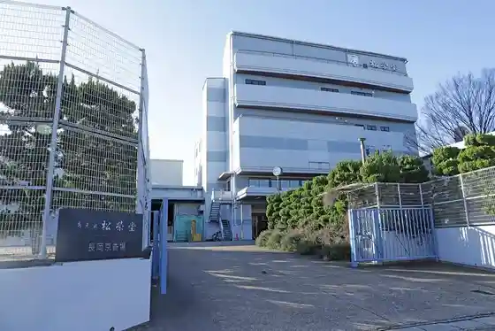
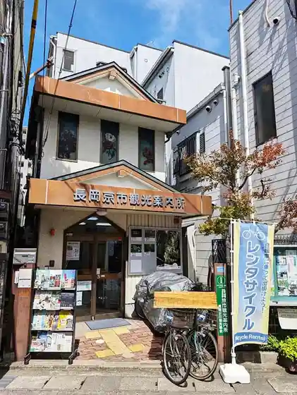

Nagaokakyo, Kyoto: things to do, food and stays
Nagaokakyo · Kyoto
Nagaokakyo
Highlighted on the Kyoto map.

Sights
Yanagitani Kannon (Yo Tani Tera)


Kaori Shinise Shoei Do Nagaokakyo Kaori Ba

Nagaokakyo Tourism Association

Nagaokakyo Tategami Ashi Fureai Town Ie (Kyu Ishida Ie House)
Dining
ANte
ANte
Cafe in Nagaokakyo. Open daily 13:00-17:00.
BAKEHOUSE Mere
BAKEHOUSE Mére

Bakery in Baba, Nagaokakyo. Open daily 06:30-18:00; closed Wed.
Billiard Cafe Focal
Billiard Cafe Focal
Cafe in Nagaokakyo.
Enzo
円藏
Korean restaurant in Nagaokakyo. Open daily 11:30-14:00, 17:00-23:00.
McDonald's
マクドナルド
Burger fast-food restaurant in Nagaokakyo.
Nishikimizu Tei
錦水亭

Restaurant in Nagaokakyo.
Ogura Sanso Famu Dining Cafe
小倉山荘ファームダイニングカフェ

Cafe in Nagaokakyo.
Ogura Sanso Takeo no Gomoto Kan
小倉山荘 竹生の郷本館

Sweets shop in Nagaokakyo.
Pizza-La
ピザーラ
Pizza restaurant in Baba, Nagaokakyo. Open Mon-Fri 16:00-22:30; public holidays, Sat, Sun 11:00-22:30.
Yoshokuya Akira
洋食屋 Akira

Western-style restaurant in Nagaokakyo.
Belle Equipe
Belle Equipe
Sweets shop in Nagaokakyo.
Burger Products
Burger Products
Burger fast-food restaurant in Nagaokakyo.
Cafe Koba
Cafe Koba
Cafe in Nagaokakyo.
Cafe Siskoti
Cafe Siskoti
Ice cream cafe in Nagaokakyo.
Cafe&Lunch Beans
Cafe&Lunch Beans
Cafe in Nagaokakyo. Open Mon, Wed-Sun 09:00-18:00.
cake house nils
ケーキハウス ニルス
Sweets shop in Nagaokakyo.
Carry Cafe.C
Carry Cafe.C
Cafe in Nagaokakyo.
Cocone-ya
ここ音屋
Pasta sweets shop in Nagaokakyo.
COFFEE & DINING BAR PinkDiamond
COFFEE & DINING BAR PinkDiamond
Cafe in Nagaokakyo.
Coto Coto
Coto Coto
Cafe in Nagaokakyo.
Daihachi Hanten
大八飯店
Chinese restaurant in Baba, Nagaokakyo. Open daily 11:30-14:00; daily 17:30-21:00.
Daikichi
大吉
Chicken pub in Nagaokakyo.
Ennin
圓仁
Japanese restaurant in Nagaokakyo.
Epoca
エポカ
Cafe in Nagaokakyo.
Fisherman's Cafe
Fisherman's Cafe
Cafe in Nagaokakyo.
Friend
富恋人 (Friend)
Restaurant in Nagaokakyo.
Furaibo
風来坊
Ramen restaurant in Kotari, Nagaokakyo.
Genteru Ie
源輝家
Japanese restaurant in Nagaokakyo. Open daily 11:00-14:00, 17:00-23:00.
Gimme Curry
ギンミカリー
Curry restaurant in Nagaokakyo. Open Mon-Fri 11:00-15:00, 17:00-23:00; public holidays, Sat-Sun 11:00-22:00.
Higashiya
ひがしや
Fish pub in Nagaokakyo.
Hinoki
檜
Japanese and okonomiyaki restaurant in Baba, Nagaokakyo. Open public holidays, Tue-Sun 17:00-21:00.
Ichiban
一番
Chicken pub in Nagaokakyo.
Ichiraku
一楽
Chinese restaurant in Nagaokakyo.
Ikoi
いこい
Japanese restaurant in Nagaokakyo.
Imasato
今里
Cafe in Nagaokakyo.
Ishidateppei
石田てっぺい
Noodle restaurant in Nagaokakyo.
Izakaya Yu
居酒屋 優
Chicken pub in Nagaokakyo.
Kaji Iori
かじ庵
Chicken pub in Nagaokakyo.
Katsu
克
Japanese restaurant in Nagaokakyo.
Kibo Ken
希望軒
Ramen restaurant in Nagaokakyo.
Kitchen Blue Lake
Kitchen Blue Lake
Chicken restaurant in Nagaokakyo.
Kogetsu
鼓月
Sweets shop in Nagaokakyo.
Kota Sato
こうた里
Chicken pub in Nagaokakyo.
Koto Kyu
古都久
Japanese restaurant in Nagaokakyo.
Machida Shoten
町田商店
Noodle restaurant in Nagaokakyo.
Maco
Maco
Cafe in Nagaokakyo.
Manya
萬屋
Noodle restaurant in Nagaokakyo.
Masahiro
Coloado Coffee マサヒロ
Cafe in Nagaokakyo.
Matsu no Ya
松のや
Fast-food restaurant in Nagaokakyo.
Menya Ryusen
麺屋 龍仙
Noodle and ramen restaurant in Nagaokakyo.
Mesa Verte
メサベルテ
Bakery in Nagaokakyo.
Misuta Ramen
ミスターラーメン
Noodle and ramen restaurant in Nagaokakyo.
Nakano
なかの邸
Japanese restaurant in Nagaokakyo.
Namaste Taj Mahal
ナマステタージマハル
Indian and curry restaurant in Kotari, Nagaokakyo. Open daily 11:00-14:30, 17:00-22:30.
Nigiri Tyojiro Nagaoka-branch
にぎり長次郎 長岡京店
Restaurant in Nagaokakyo.
Niwatori Tenjin
鶏 天神
Chicken pub in Nagaokakyo. Closed Mon.
Pao
Pao
Bakery in Nagaokakyo.
pasta vincolo
pasta vincolo
Pasta and pizza restaurant in Nagaokakyo.
PATISSERIE Clucru
パティスリークルクリュ
Sweets shop in Nagaokakyo. Open Tue-Sun 10:00-19:30.
Puchipowa
プチポワ
Steak restaurant in Nagaokakyo.
Rairakku
ライラック
Cafe in Nagaokakyo.
Ray Farm
Ray Farm
Barbecue restaurant in Nagaokakyo.
SAN MARCO
SAN MARCO
Restaurant in Nagaokakyo.
Sei
牛串&ステーキ 誠
Steak restaurant in Nagaokakyo.
Shiroi Piano
白いピアノ
Cafe in Nagaokakyo. Open Mon-Fri 09:00-17:00; Sat 09:00-16:00.
Shoya
庄や
Japanese pub in Nagaokakyo.
Suito
すいーと
Japanese cafe in Nagaokakyo.
Sumibi Yakiniku Aoyama
炭火焼肉 青山
Barbecue restaurant in Nagaokakyo.
Sushi Shimizu Kyoto
鮨 清水 京都
Sushi restaurant in Nagaokakyo.
Suzuya
寿々屋
Sweets shop in Nagaokakyo.
Taishu Sakaba Jukai Main Store
大衆酒場 寿海本店
Japanese bar in Nagaokakyo.
TATRA
TATRA
Cafe in Nagaokakyo. Open Wed-Sat 11:00-17:00.
Teru
輝
Barbecue restaurant in Nagaokakyo.
The Baking produced by Unir
The Baking produced by Unir
Bakery in Nagaokakyo.
Tori Kubo
鳥くぼ
Japanese restaurant in Kotari, Nagaokakyo.
Tsukumo
手打ちうどん九十九 (Tsukumo)
Noodle restaurant in Nagaokakyo.
Unir
ウニール
Cafe in Nagaokakyo.
uosu
うお寿
Japanese restaurant in Nagaokakyo.
Wakana Soba
若菜そば
Noodle and soba restaurant in Nagaokakyo.
Wakatake
わかたけ
Japanese restaurant in Nagaokakyo.
Wakiaiai
和気藹々
Noodle restaurant in Nagaokakyo.
Yakiniku no Daisetsu
焼き肉の大拙
Barbecue restaurant in Nagaokakyo.
Dining listings marked “Dining in” use data © OpenStreetMap contributors (ODbL); photos are from each venue’s own site or Wikimedia Commons as credited.